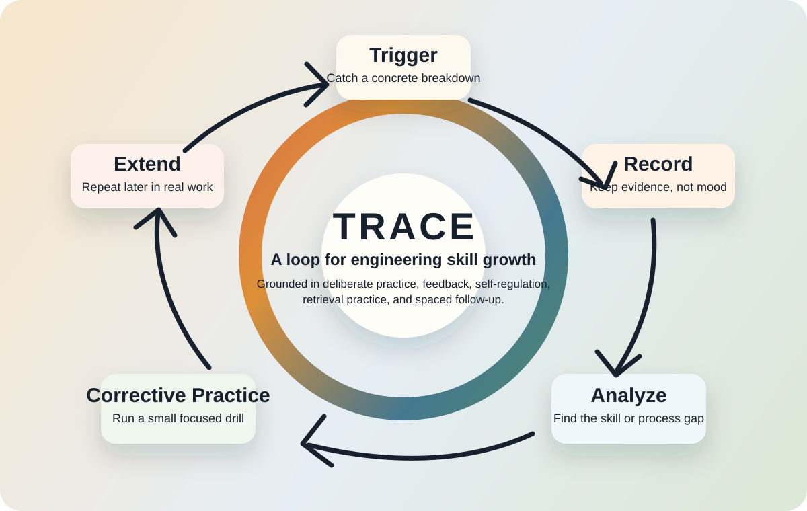
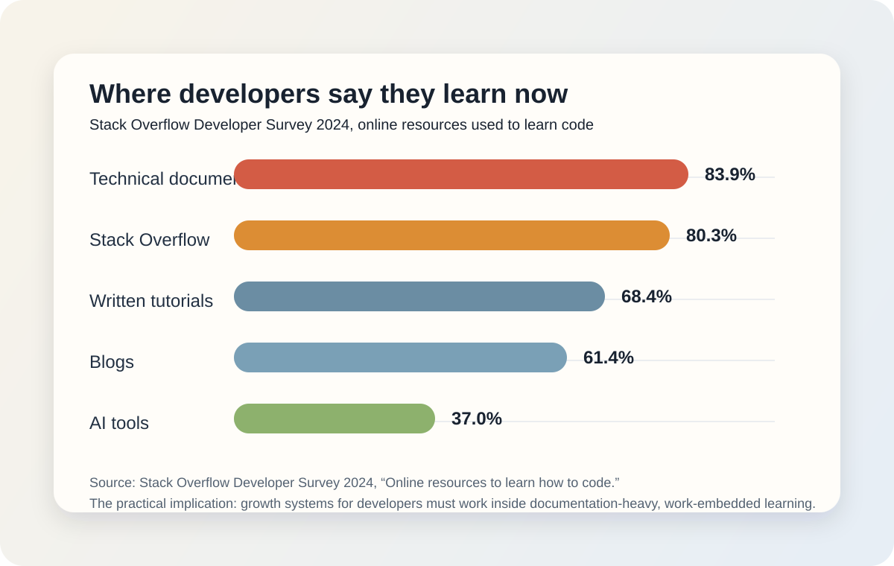

Most “improvement systems” for engineers fail for a simple reason: they record frustration, but they do not create better practice.
A missed handoff, a messy incident, a weak code review, or a debugging session that spirals for hours can all feel like signs that you need to “get better.” But the research on expertise, feedback, self-regulated learning, and skill retention says something more specific. Improvement is not caused by vague awareness of weakness. It comes from structured work on a narrow performance gap, supported by feedback, repetition, reflection, and enough spacing to make the learning stick.
That is the gap this article tries to close. Instead of treating weakness tracking as self-criticism, I want to treat it as an engineering learning loop grounded in evidence.
Weakness tracking becomes useful only when it stops being a diary of friction and starts becoming a system for corrective practice.
Why Simple Weakness Tracking Usually Fails
There is nothing wrong with writing down that you missed a follow-up, misunderstood a storage issue, or needed the same concept explained twice. The problem is that most personal tracking systems stop there.
In practice, weak systems usually fail in one of four ways:
- they record feelings instead of observable evidence
- they name broad traits instead of narrow performance gaps
- they add intentions instead of creating practice conditions
- they never revisit the issue after the first reflection
That failure mode matters because expertise research does not support the idea that people improve just by noticing that they are weak somewhere. Anders Ericsson’s work on deliberate practice argues almost the opposite: improvement requires tightly defined goals, full concentration, informative feedback, and repeated opportunities to refine performance beyond its current level.12
So if your “weakness tracker” does not eventually create a better task, a better drill, a better review cycle, or a better feedback loop, it is not yet a growth system. It is just a log.
What The Research Actually Supports
The strongest version of this idea starts with deliberate practice, but it should not end there.
Ericsson’s general overview of deliberate practice describes four conditions that repeatedly show up when performance improves: a well-defined goal, motivation to improve, feedback, and repeated chances for gradual refinement.1 In medical simulation literature, those same ideas get translated into highly practical terms: measurable objectives, micro-skills, low-risk repetition, and real-time actionable coaching.3
But it is also important to be technically accurate about the limits of deliberate practice. A widely cited meta-analysis by Brooke Macnamara, David Hambrick, and Frederick Oswald found that deliberate practice explains meaningful variance in performance, but not all of it. Their estimates were much lower in professional domains than in games, music, or sports.4 That matters for engineers because software work is not a violin studio. Performance depends on mentoring, tooling, task design, cognitive load, domain context, team practices, and access to representative work.
That is where self-regulated learning research becomes useful. Barry Zimmerman’s overview frames learning as a cycle of forethought, performance, and self-reflection, while Butler and Winne argue that feedback is not just an add-on to learning; it is built into self-regulation itself.56 John Hattie and Helen Timperley refine the feedback side even further: the most useful feedback is aimed at the task, the process, and self-regulation, whereas feedback aimed only at the self as a person is usually weak.7
Retention research adds another layer. Jeffrey Karpicke and Henry Roediger showed that repeated retrieval has stronger effects on delayed recall than repeated study alone.8 More recent reviews on distributed and retrieval practice continue to show benefits when learning is spaced and revisited over time rather than massed in one intense burst.910
Finally, software engineering research gives this discussion a more realistic home. Fabian Fagerholm and colleagues surveyed 311 papers on cognition in software engineering and found the field heavily shaped by knowledge, memory, reasoning, and cognitive load.11 Maggie Johnson and Max Senges’ Google case study shows that apprenticeship and practice-based learning are not side topics in engineering work; they are core mechanisms for turning new engineers into effective contributors.12 Michael Scott and Gheorghita Ghinea make a parallel point from programming education: misconceptions and weak feedback can create barriers that stop practice before it compounds.13
Put together, the evidence suggests a stronger conclusion than “track your weaknesses.” A useful growth system for engineers needs five properties:
- a concrete signal from real work
- evidence that reduces ambiguity
- a diagnosis of the actual gap
- a focused corrective practice step
- a later return to the skill under realistic conditions
The TRACE Loop
I call that structure the TRACE Loop:
- Trigger: catch a concrete breakdown in real work
- Record: preserve evidence before memory smooths it over
- Analyze: identify whether the gap was task knowledge, process, judgment, or self-regulation
- Corrective Practice: run a small, focused drill with feedback
- Extend: revisit the same skill later with spacing and a more realistic context

Trigger
The trigger is not a vague sense that you were “not good enough.” It is a concrete event: a slow incident response, repeated rework after code review, a runbook you could not follow under pressure, or a design discussion where you could not explain the tradeoff clearly.
Record
This is where most systems get sloppy. The record should keep evidence, not mood. Save the error message, the PR comments, the broken assumption, the command sequence, the timeline, or the exact question that exposed the gap. That makes later analysis far more accurate.
Analyze
Analysis means asking what actually failed. Was it a missing fact? A weak debugging process? Inadequate monitoring? A bad mental model? Or a self-regulation issue such as rushing, not checking assumptions, or failing to return after feedback? Hattie and Timperley’s distinction between task, process, and self-regulation is useful here because it prevents everything from collapsing into “I need to try harder.”7
Corrective Practice
This is the most important step. The corrective action should be smaller than the original failure. Do not “practice Kubernetes.” Practice one specific thing: reproducing the PVC mount path, reading scheduler events in order, designing a clearer rollback checklist, or summarizing a production issue in three accurate paragraphs. The task should be narrow enough that you can repeat it and inspect it.
Extend
One successful repetition is not enough. Retrieval and spaced practice research strongly suggest that re-encountering the skill later matters for retention.89 In engineering terms, that means bringing the same micro-skill back into a later incident review, code review, design note, onboarding task, or dry-run simulation.
How To Use TRACE In Real Engineering Work
TRACE works best when the unit of improvement is small, testable, and close to production reality. Here is a more practical version of the loop:
| Work Signal | Likely Gap | Corrective Practice | Extension Test |
|---|---|---|---|
| Incident took too long to isolate | Weak process model for evidence gathering | Re-run the timeline and classify which commands, logs, and metrics mattered | Use the same sequence on the next similar incident or simulation |
| PR feedback keeps repeating | Missing design or communication heuristic | Rewrite one review response and one commit explanation using the reviewer’s logic | Check whether the next PR avoids the same comment class |
| Runbook failed under pressure | Documentation is descriptive, not executable | Convert one runbook into a timed dry run with missing-step notes | Ask another engineer or future-you to execute it cold |
| Onboarding to a codebase felt slow | No apprenticeship path or guided exploration | Create a map of one subsystem: entrypoints, ownership, logs, common failure modes | Reuse the map when the next related task arrives |
This is also why a personal growth system should live near the work itself. The best input is not a motivational notebook. It is the artifact trail that real engineering already produces: alerts, tickets, PRs, postmortems, docs, and review comments.
What Current Developer Data Suggests
Recent survey data also supports the idea that developer learning is embedded in work, not isolated from it. In Stack Overflow’s 2024 Developer Survey, 83.9% of respondents said they use technical documentation to learn how to code, 80.3% use Stack Overflow, and 37% use AI tools for learning.14 The same survey reports that 38% of respondents have been coding for 15 years or more, which means a useful learning framework cannot assume novice-only classroom conditions.

The practical conclusion is that engineers need learning loops that fit documentation-heavy, interruption-prone environments. That makes TRACE less about grand career plans and more about turning friction from ordinary work into reusable skill growth.
Where This Approach Breaks Down
Even a well-designed framework will fail if the practice conditions are wrong.
- Too broad: “Get better at architecture” is not a practice target.
- No external signal: if nobody or nothing checks the work, the loop becomes self-confirming.
- No spacing: one successful retry can create false confidence.
- Only self-level feedback: praise or blame without task/process information rarely improves performance.7
- No apprenticeship path: some engineering skills improve faster when modeled by stronger practitioners, not only through solitary repetition.12
This is also where the limits of deliberate practice matter. In professional work, performance depends on systems, teammates, tooling, and opportunities, not just personal effort.4 A growth framework should make those dependencies visible instead of blaming the individual for every slow result.
A Small Framework You Can Actually Run
If you want a minimal version of this article to use tomorrow, keep one small table with four fields:
| Trigger | Evidence | Corrective Practice | Next Re-test |
|---|---|---|---|
| PVC mount incident took too long to isolate | Pod events, missing CSI node plugin, delayed hypothesis change | Reconstruct the troubleshooting path and practice the check order | Repeat in the next storage-related issue review |
| Project note stalled after creation | Status existed but no executable next action | Rewrite the note so the next action is concrete, time-bound, and testable | Check whether the project moves within 24 hours |
That is enough to start. The important thing is not the size of the tracker. It is whether the loop changes later behavior.
Make The Loop Small Enough To Repeat
The most useful thing I took from the research is that improvement is rarely driven by dramatic reinvention. It is usually driven by repeated, specific, well-observed corrections.
That makes weakness tracking worth keeping, but only in a stricter form. Capture the signal. Preserve the evidence. Diagnose the real gap. Practice one thing on purpose. Revisit it later under more realistic conditions.
That is the version of “working on your weaknesses” that actually behaves like engineering.
References
- Ericsson, K. Anders. “Deliberate Practice and Acquisition of Expert Performance: A General Overview”. Academic Emergency Medicine, 2008.
- Ericsson, K. Anders, Ralf Th. Krampe, and Clemens Tesch-Römer. “The Role of Deliberate Practice in the Acquisition of Expert Performance”. Psychological Review, 1993.
- Myrick, Kelsey, and colleagues. “Deliberate Practice in Medical Simulation”. StatPearls, NCBI Bookshelf.
- Macnamara, Brooke N., David Z. Hambrick, and Frederick L. Oswald. “Deliberate Practice and Performance in Music, Games, Sports, Education, and Professions: A Meta-Analysis”. Psychological Science, 2014.
- Zimmerman, Barry J. “Becoming a Self-Regulated Learner: An Overview”. Theory Into Practice, 2002.
- Butler, Deborah L., and Philip H. Winne. “Feedback and Self-Regulated Learning: A Theoretical Synthesis”. Review of Educational Research, 1995.
- Hattie, John, and Helen Timperley. “The Power of Feedback”. Review of Educational Research, 2007.
- Karpicke, Jeffrey D., and Henry L. Roediger III. “The Critical Importance of Retrieval for Learning”. Science, 2008.
- Trumble, Emma, Jason Lodge, Allison Mandrusiak, and Roma Forbes. “Systematic Review of Distributed Practice and Retrieval Practice in Health Professions Education”. Advances in Health Sciences Education, 2024.
- Kang, Steven and colleagues. “The Distributed Practice Effect on Classroom Learning: A Meta-Analytic Review of Applied Research”. Behavioral Sciences, 2025.
- Fagerholm, Fabian, Michael Felderer, Davide Fucci, and colleagues. “Cognition in Software Engineering: A Taxonomy and Survey of a Half-Century of Research”. arXiv, 2022.
- Johnson, Maggie, and Max Senges. “Learning to Be a Software Engineer in a Complex Organization”. Journal of Workplace Learning, 2010.
- Scott, Michael James, and Gheorghita Ghinea. “Educating Programmers: A Reflection on Barriers to Deliberate Practice”. HEA STEM Conference / arXiv, 2013.
- Stack Overflow. Developer Profile, 2024 Developer Survey. Accessed May 2, 2026.
- Panadero, Ernesto. “A Review of Self-Regulated Learning: Six Models and Four Directions for Research”. Frontiers in Psychology, 2017.